<div class="row contact-shop">
  <div class="col-lg-12 portlets">
    <div class="panel">
      <div class="panel-content">
        <div class="row" style="min-height: 800px;">
          <div class="col-xs-3 contact-shop__menu" style="width: 280px;">
            <ul>
              <li ng-class="{'cur':$ctrl.tabNum ==1 }" ng-click="$ctrl.choiceTab(1)">小电铺简介</li>
              <li ng-class="{'cur':$ctrl.tabNum ==2 }" ng-click="$ctrl.choiceTab(2)">小电铺开通(主体是自己)</li>
              <li ng-class="{'cur':$ctrl.tabNum ==3 }" ng-click="$ctrl.choiceTab(3)">小电铺开通(主体是SEE)</li>
              <li ng-class="{'cur':$ctrl.tabNum ==4 }" ng-click="$ctrl.choiceTab(4)">商品分销</li>
            </ul>
          </div>
          <div class="col-xs-8 contact-shop__content">
            <dl ng-if="$ctrl.tabNum == 1">
              <dt>小电铺简介</dt>
              <dd>小电铺是连接自媒体与品牌的小程序，国内首个小程序社群电商，为自媒体提供一体化变现服务，帮助品牌和零售商在微信生态实现品效合一，共同开启新营销和新零售之路。</dd>
              <dd>小电铺包含三种套餐，分别为基础版、进阶版以及专业版，不同的套餐对应不同的功能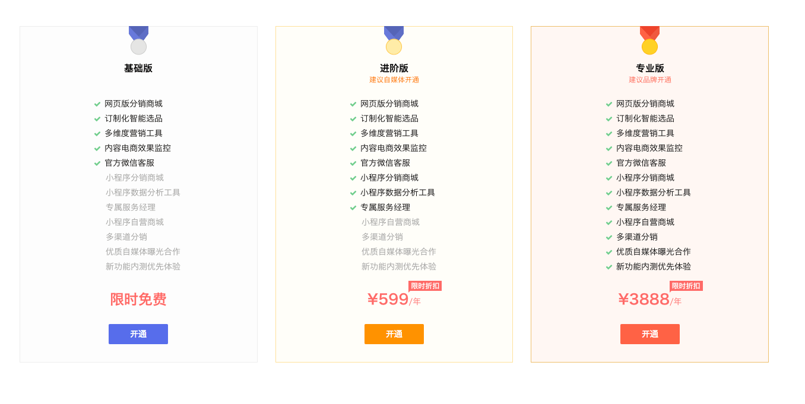</dd>
            </dl>
            <dl ng-if="$ctrl.tabNum == 2">
              <dt id="2-1">一：怎样注册小程序</dt>
              <dd>1.用户需要在微信公众平台官网首页（https://mp.weixin.qq.com），点击右上角的“立即注册”按钮。之后选择“小程序”，进行小程序账号注册，点击“查看类型区别”可查看不同类型帐号的区别和优势
              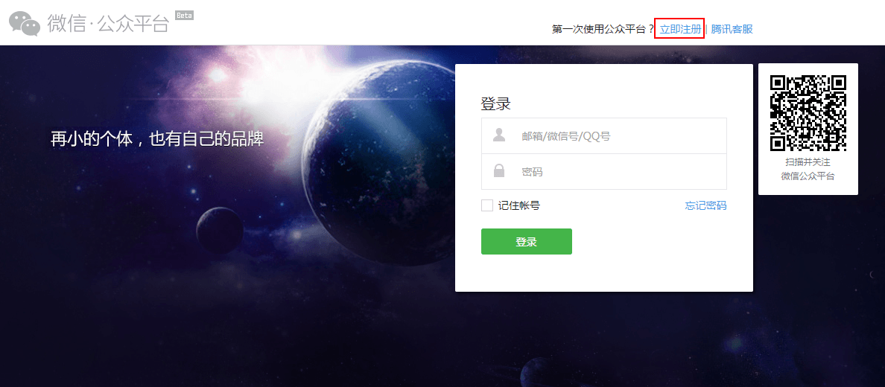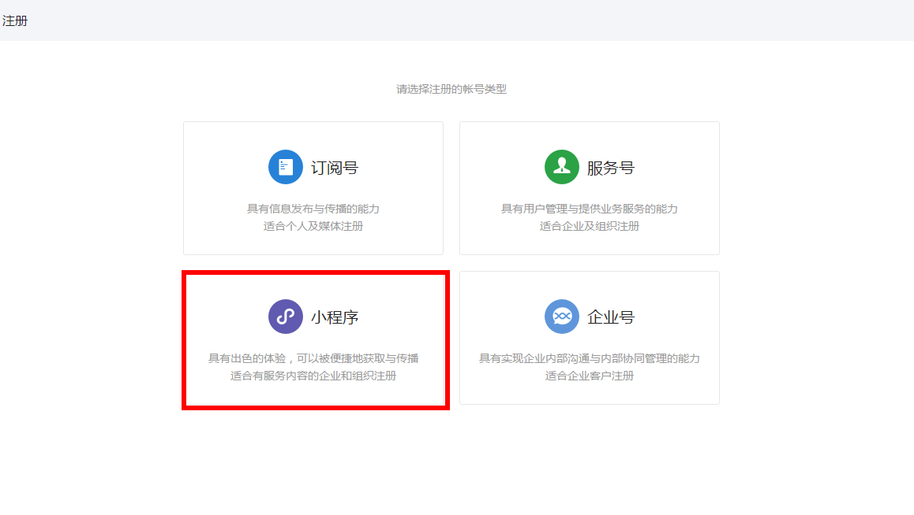</dd>
              <dd>2.填写小程序登录邮箱和密码。请填写未注册过公众平台、开放平台、企业号、未绑定个人号的邮箱。之后登陆邮箱，查收激活邮件，点击激活链接。</dd>
              <dd>3.点击激活链接后，继续下一步的注册流程。请选择主体类型选择，完善主体信息和管理员信息。</dd>
              <dd>4.目前小电铺小程序仅开放给主体类型为企业的用户，暂不开放给个人。企业类型帐号可选择两种主体验证方式。<br/>方式一：需要用公司的对公账户向腾讯公司打款来验证主体身份。打款信息在提交主体信息后可以查看到。<br/>&nbsp;&nbsp;&nbsp;&nbsp;&nbsp;&nbsp;&nbsp;&nbsp;温馨提示：请在10天内完成汇款，否则将注册失败。<br/>方式二：通过微信认证验证主体身份，需支付300元认证费。认证通过前，小程序部分功能暂无法使用。
                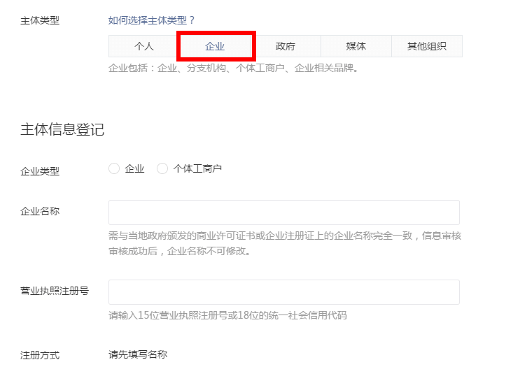
              </dd>
              <dt id="2-2">二：怎么补充小程序基本信息</dt>
              <dd>1.在小程序验证成功后，你需要通过之前填写的登录邮箱和密码，登录小程序后台（https://mp.weixin.qq.com/）进行基本信息的补充, 包括小电铺小程序的名称、头像、简介以及服务类目
                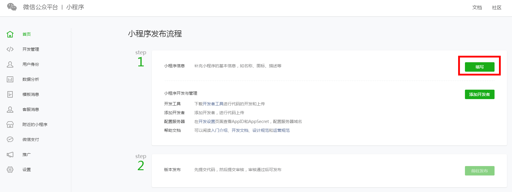
                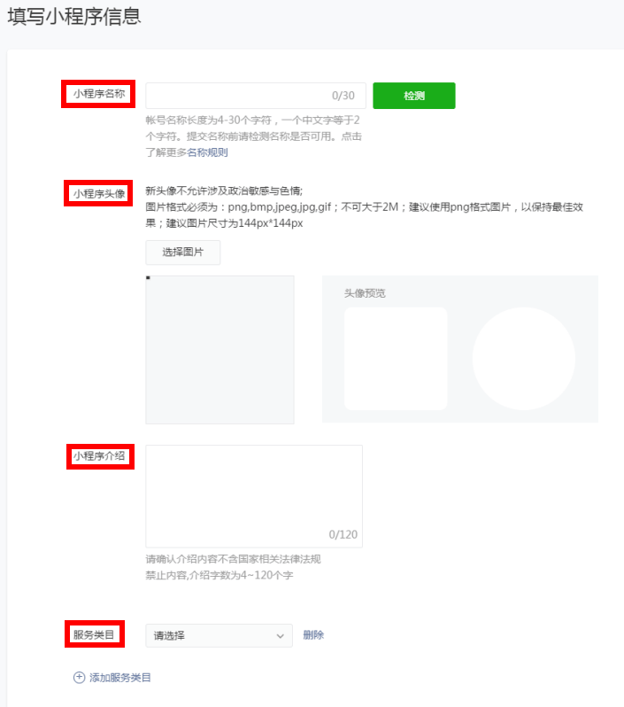
              </dd>
              <dd>2.为小电铺添加服务类目时，请在“商家自营”下选择你即将在小电铺售卖的商品类目。 注意，如果小程序提供类目与所售卖商品类目不一致，会导致小程序在微信审核中无法过审。部分类目需要用户提供相关资质才可以生效，如下: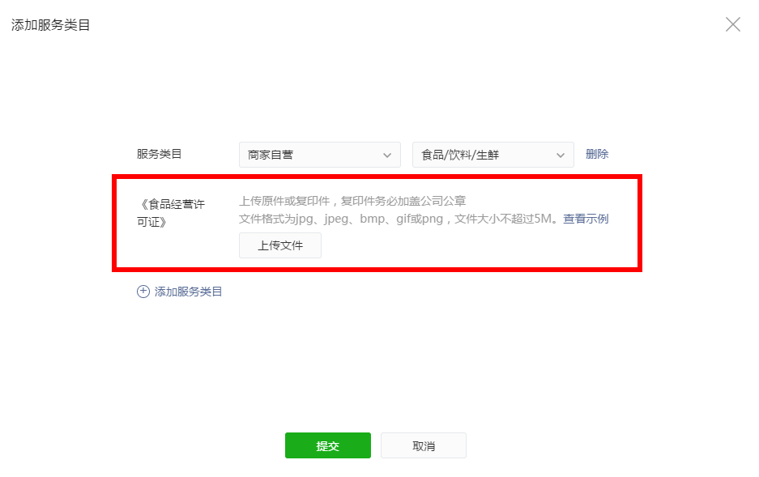</dd>
              <dt id="2-3">三：如何为小程序开通微信支付</dt>
              <dd>1.微信小程序当前仅支持开通微信支付的企业或个体商户主体进行使用，如果你还未申请微信支付，那么在进一步申请小电铺之前，需要先为你的小程序开通微信支付。</dd>
              <dd>2.申请微信支付之前需要开通微信认证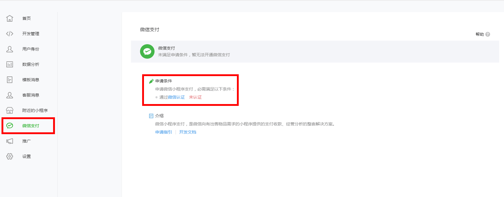</dd>
              <dd>3.成功通过微信认证的小电铺小程序可以在当前tab下，按照微信后台指引，上传相应资质，开通微信支付</dd>
              <dd>4.开通微信支付后，请进行进一步的小电铺创建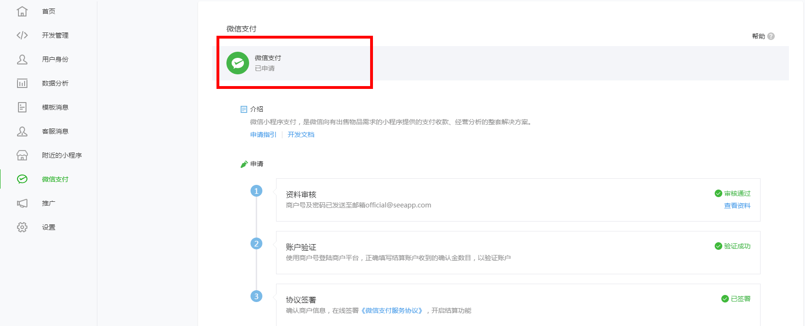</dd>
              <dt id="2-4">四：如何为小电铺补充支付信息</dt>
              <dd>1.用户需要正确填写小程序ID，小程序密钥，商户号，商户密钥以及退款证书，将自己的小电铺小程序绑定自己的微信支付，错误的信息会导致你的小电铺小程序微信支付异常，从而无法通过审核</dd>
              <dd>2.哪里可以查看到小电铺小程序ID以及小程序密钥？<br/>
                &nbsp;&nbsp;&nbsp;小程序ID以及小程序密钥可以在小程序后台（https://mp.weixin.qq.com），设置——开发设置中获取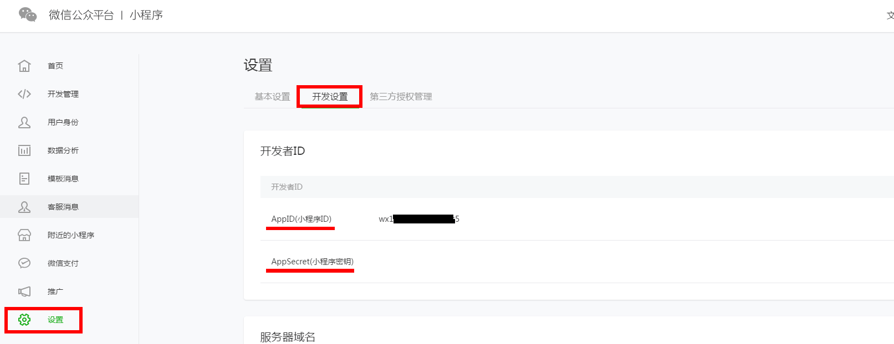</dd>
              <dd>3.哪里可以查看到商户ID以及商户密钥？<br/>
                &nbsp;&nbsp;&nbsp;申请微信支付审核通过后，微信会将<strong>商户号</strong>发送到申请微信支付时填写的重要信息接收邮箱<br/>
                &nbsp;&nbsp;&nbsp;<strong>商户密钥</strong>以及<strong>退款证书</strong>可以在微信支付后台（https://pay.weixin.qq.com），账号中心——API安全中获取<br/>&nbsp;&nbsp;&nbsp;如下图所示，点击设置密钥，获取商户密钥；点击下载证书，获取退款证书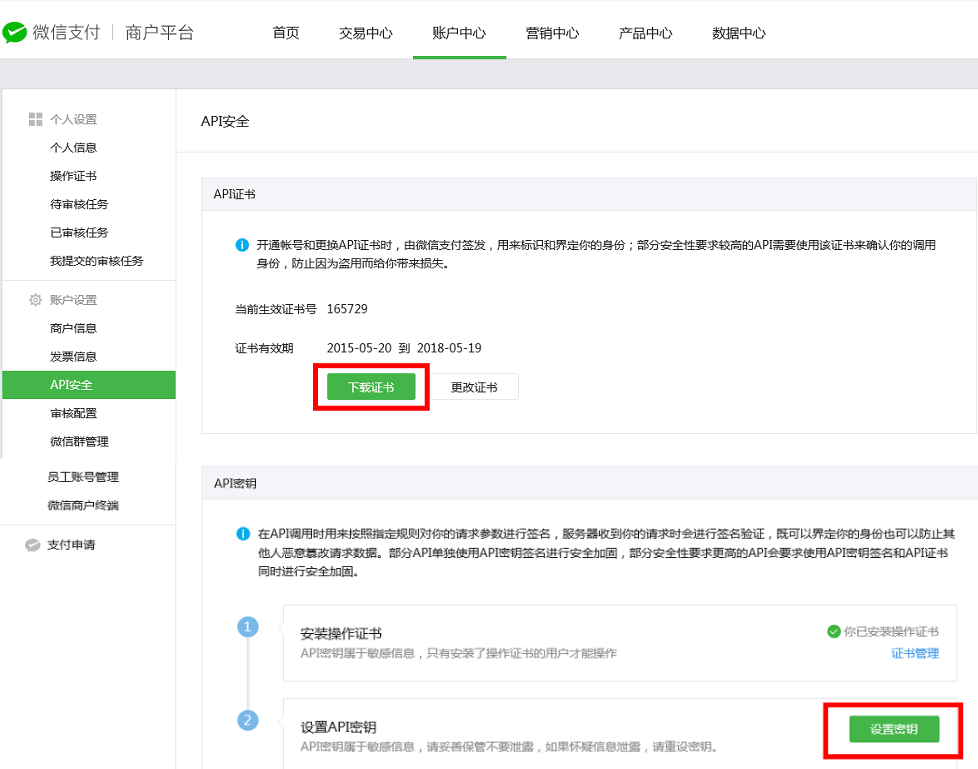</dd>
            </dl>
            <dl ng-if="$ctrl.tabNum == 3">
              <dt>如何创建主体是SEE的小电铺</dt>
              <dd>
                1.确定小电铺套餐后，在小电铺开通流程中，选择“主体为SEE”，进入主体为SEE的小电铺申请流程
              </dd>
              <dd>2.小电铺申请者只需要按照指引，上传小电铺的名称，头像及简介，即可完成主体为SEE的小电铺申请</dd>
              <dd>3.待SEE审核通过后，小电铺即可正常使用</dd>
            </dl>
            <dl ng-if="$ctrl.tabNum == 4">
              <dt>如何进行商品分销</dt>
              <dd>1.在热门单品库中选择商品添加到选品库 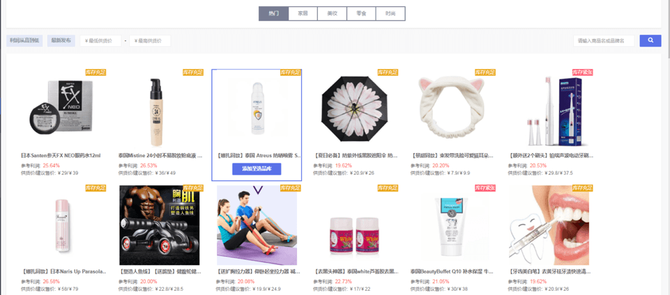</dd>
              <dd>2.在内容电商模块下创建文章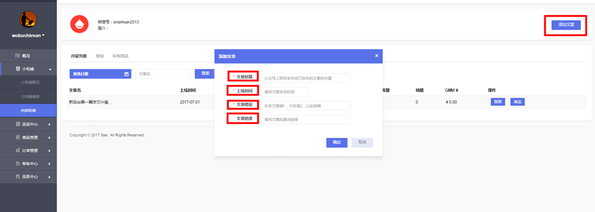</dd>
              <dd>3.在文章列表内，点击“商品”按钮，跳转至该文章商品列表为文章添加商品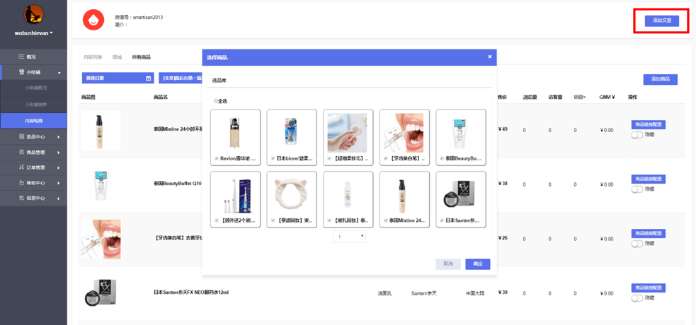</dd>
              <dd>4.在商品列表获取单个商品分销链接；或返回文章列表，获取文章对应商品集合的分销链接进行商品分销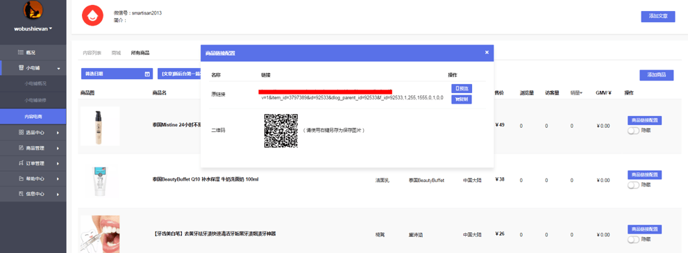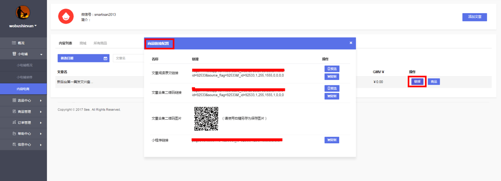</dd>
            </dl>
          </div>
        </div>
      </div>
    </div>
  </div>
</div>
